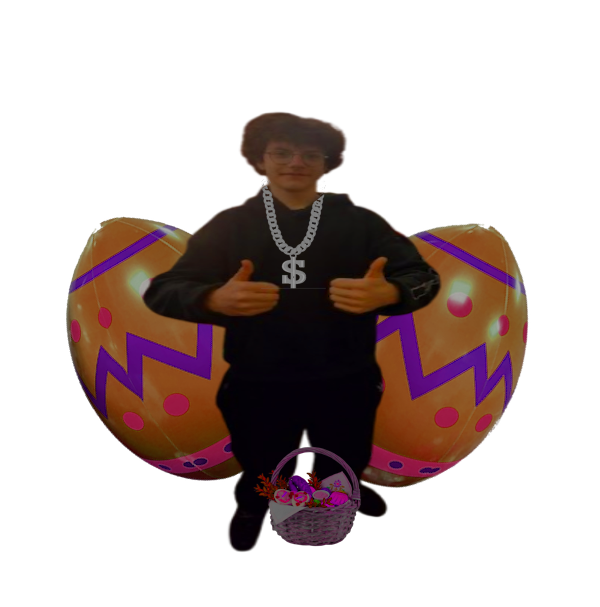

HISTORIA WIELKANOCY
Wielkanoc to najważniejsze święto chrześcijańskie, które upamiętnia zmartwychwstanie Jezusa Chrystusa. Jej historia sięga wydarzeń opisanych w Biblii, które miały miejsce w I wieku w Jerozolimie. Symbolizuje zwycięstwo życia nad śmiercią i jest czasem radości oraz nadziei.
Święto to obchodzone jest każdego roku wiosną — zazwyczaj między marcem a kwietniem. Poprzedza je 40-dniowy okres postu zwany Wielkim Postem, który kończy się Triduum Paschalnym: Wielkim Czwartkiem, Wielkim Piątkiem oraz Wielką Sobotą.
W Polsce Wielkanoc ma bogatą tradycję. Święconka, śmigus-dyngus, malowanie pisanek czy wyplatanie palm wielkanocnych to zwyczaje przekazywane z pokolenia na pokolenie. Każdy z nich niesie ze sobą głęboką symbolikę odrodzenia i nowego życia.
